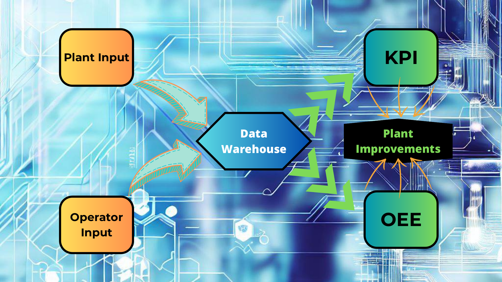

Cobre Las Cruces, Nov 2011 - Jul 2012

As intern in Control Department I was in charge of developing control tools for engineers, including developing calculation in PI ACE and Processbook.
Graphic Summary

Experience Highlights
KPI: Developing and implementing a tool to follow up the manufacture key performance indicators. This project includes developing calculation on PI ACE and downloading result on PI Database. Reading data into PI Processbook, including VBA codification for deep calculation and sight improvements.
OEE: Developing and implementing a tool to follow up p the overall equipment efficiency. This project includes developing data capture app developed in VB, reading this information and making new calculation in PI ACE to show up into PI Processbook for bottleneck analysis.